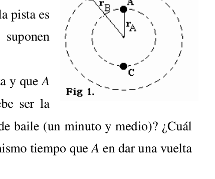
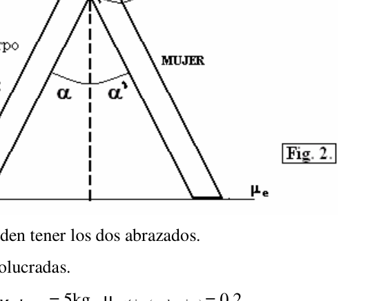
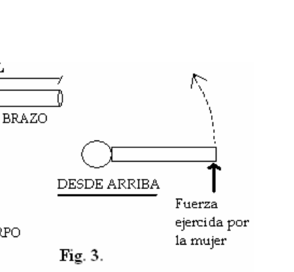

El tango y la danza
PT52. Ciudad de Buenos Aires. Azul. Un problema bien argentino… El tango, tanto su música como su danza, es el resultado de la conjunción de diversas influencias tanto europeas como africanas. Esta mezcla produce que su origen sea desdibujado y poco claro. Como lo manifiestan muchas otras cosas en Buenos Aires, se caracteriza por ser de origen mestizo y, por sobre todo, urbano y popular. En el caso particular de la danza, ésta fue diseñada a partir del abrazo, el encuentro, intentándose en todo momento, hacer una clara manifestación de sentimientos. Al igual que muchas letras de Tango, la mayoría de los temas son de carácter amoroso, triste y angustioso; aunque nunca faltan los motivos picarescos y alegres (principalmente en las llamadas milongas). Todo en la danza del tango está vinculado, las miradas, los brazos, las manos, cada movimiento del cuerpo acompañando la cadencia y lo que ellos están viviendo: un romance de tres minutos, entre dos personas que a lo mejor recién se conocen y que muy probablemente no tengan una relación amorosa en la vida real. Como danza popular, además del abrazo, los otros dos ejes en torno a los cuales se construye la danza son: la caminata y la improvisación. El primero evidencia la simpleza de la danza, y el segundo su carácter popular y su construcción urbana sin estructura preestablecida. Sin embargo, en el tango, la pareja debe realizar figuras, pausas y movimientos improvisados, diferentes cada uno de ellos, sin soltarse. Muchos de estos elementos se fueron reiterando con el tiempo, llegando a actualmente existir diversas estructuras bien establecidas. La circulación en la pista de baile… Como se dijo, el tango, pese a ser una danza improvisada, tiene algunas reglas que debían ser respetadas por todos. Por ejemplo, en los lugares donde se baila tango (milongas) se debe respetar el
- 56 - sentido de circulación de la pista (anti-horario) y bajo ningún punto de vista, se permite “chocar” a nadie. Supongan que en una milonga la pista es circular (Fig. 1.). A, B y C son tres parejas de baile que se suponen puntuales por simplicidad.
- Suponiendo que A y C parten de puntos opuestos de la pista y que A se mueve a velocidad en módulo constante de 2m/s. ¿Cuál debe ser la velocidad de C para alcanzarla, por primera vez, en medio tema de baile (un minuto y medio)? ¿Cuál es la velocidad de B (en módulo, dirección y sentido) si tarda el mismo tiempo que A en dar una vuelta completa a la pista? Datos: rA = 2m , rB = 5m Algunas figuras de baile: El Apile… El Apile es una figura de baile donde los bailarines inclinan su cuerpo hacia delante haciendo contacto a la altura de la cintura escapular (de frente, hombro con hombro). Una vez “apilados” los bailarines se desplazan por la pista, siendo una figura muy vistosa por la sensación de vértigo que genera. En la Fig. 2 se observa una vista esquemática de dicha figura.
- Una compañía de baile elige a sus
bailarines de modo tal que la dama, con
tacos, tenga la misma altura que su
compañero de baile (1,7 m). Con los datos
de la Fig.2 (ambos cuerpos se consideran
homogéneos) y suponiendo que existe una
fuerza de interacción en A, plantee las
ecuaciones estáticas. ¿Deben ser α y α’
ángulos iguales? Exprese en función de los
datos del problema los ángulos máximos αy α’ que pueden tener los dos abrazados.
Ayuda: Realice primero un diagrama de las fuerzas involucradas.
Datos: mHcuerpo = 70kg , mMcuerpo = 55kg , mHcabeza = mMcabeza = 5kg , µestático(suela-piso) = 0,2 - Plantee las ecuaciones del inciso anterior, pero ahora suponiendo que sumergimos a la pareja en un medio mas denso que el aire (puede pensar, por ejemplo en el agua) asumiendo que la densidad de ambos bailarines es la misma. ¿Cómo se modifican α y α’? ¿Aumenta, disminuye o permanece constante? Algunas figuras de baile: El Molinete… El molinete es una figura de Tango que se emplea para que la pareja gire. Consiste en una serie de pasos en los que el hombre se mantiene en su eje y la mujer da pasos en torno a él. De esta forma, con un poco de práctica, se puede lograr que el hombre mantenga su cuerpo de manera tal que permanezca con la apariencia de la Fig 3 durante todo el giro. Así la mujer lo que hace con sus pasos es generar en el punto de contacto (la mano izquierda del hombre con la derecha de la mujer) una presión constante
- 57 - que hace que el hombre gire sobre su eje. El único cuidado que debe tener el hombre es no desarticular la estructura del cuerpo (durante todo el movimiento el brazo debe estar alineado con la cabeza).
- Suponiendo que la fuerza es constante y en
la dirección de la Fig. 3. ¿Cuál debe ser el módulo
de la fuerza para que el bailarín, partiendo del
reposo, alcance una velocidad de 1s-1 en 4 s? En la
resolución de este ítem, no se considera la cabeza del hombre para los cálculos (a fin de simplificar las
cuentas).
Sabiendo que el hombre gira dibujando una circunferencia con el extremo de su brazo: ¿realizaría trabajo una componente de la fuerza en la dirección radial? Justifique.
Datos: Icuerpo = (1/2) mcuerpo R2 , Ibrazo = (1/2) mbrazo L2 , mcuerpo = 60kg , mbrazo = 4kg , Mfr(suela-piso)= 0,3 N.m , R = 15cm , L = 70cm Algunas figuras de baile: El Gancho… Otra figura muy común es una figura llamada gancho. En esta Figura de baile, la mujer realiza un movimiento en forma de latigazo. Si describimos lo que sucede, se puede ver que la pierna inicialmente se encuentra apartada de la posición del cuerpo. Comienza a moverse hasta alcanzar la pierna del hombre. Desde ese punto, se produce el contacto y sólo continúa la porción de la pierna de la rodilla a los pies. Esto puede considerarse como un péndulo interrumpido. - Compare la expresión del período de un péndulo simple (bajo la aproximación de pequeñas
oscilaciones) con la misma expresión para el caso de un péndulo físico (en este caso
ω= I mgd = 1 2 − T π , donde I es el momento de inercia y d la distancia del punto de articulación al centro de masa). Encuentre similitudes y diferencias. Suponga a la pierna como un cilindro macizo homogéneo y que la articulación de la rodilla se encuentra justo a la mitad de la pierna. Obtenga una expresión para el período luego que se produce el contacto con la pierna del hombre (interrupción). ¿Qué magnitudes varían y cuáles permanecen constantes? Considere como datos: Momento de inercia de la pierna entera (I), masa de la pierna entera (m), distancia del punto de articulación al centro de masa (d) y g.
- 58 -



Topic: Rigid Body Statics, Oscillations & Waves Metodi: Torque & Angular Momentum Analysis, Free-Body Diagram, Simple Harmonic Motion Analysis Competenze: Physical Reasoning, Mathematical Modeling Objects: Rod, Pendulum, Cylinder Fonte: Testo (PDF) — p.3
Il tango e la danza
PT52. Città di Buenos Aires. Blu. Un problema molto argentino. Il tango, sia la sua musica che la sua danza, è il risultato della connessione di diverse influenze sia Le donne europee come quelle africane. Questa miscela produce un’origine confusa e poco chiara. Come lo Le altre cose si manifestano a Buenos Aires, è caratterizzata da essere di origine mestiza e, soprattutto Tutto, urbano e popolare. Nel particolare caso della danza, questa è stata progettata a partire dall’abbraccio, il trovo, cercando in ogni momento, di fare una manifestazione chiara di sentimenti. Come il Le parole di Tango sono molto complesse, la maggior parte dei temi sono di carattere amorevole, triste e angustiante; Le motivazioni picaresche e allegre non mancano mai (principalmente nelle cosiddette milongas). Tutto in giro. La danza del tango è legata, gli sguardi, le braccia, le mani, ogni movimento del corpo. Accompagnando la cadenza e ciò che stanno vivendo: un romanzo di tre minuti, tra due e due. persone che forse si conoscono appena e che probabilmente non hanno una relazione amorosa. nella vita reale. Come danza popolare, oltre all’abbraccio, gli altri due assi intorno ai quali si costruisce la danza sono: camminare e improvvisare. Il primo evidenzia la semplicità della danza, e il secondo la sua. La popolazione e la sua costruzione urbana senza struttura pre-establita. Tuttavia, nel tango, la la coppia deve eseguire figure, pause e movimenti improvvisati, diversi ognuno di loro, senza
-
Smettila. Molti di questi elementi si sono ripetuti nel tempo, fino a diventare attuali. La struttura è molto diversa. Il traffico sul ballo… Come si dice, il tango, nonostante sia una danza improvvisata, ha alcune regole che dovrebbero essere. rispettata da tutti. Per esempio, nei luoghi dove si balla il tango (milongas) si deve rispettare il
-
56 - senso di circolazione della pista (anti orario) e sotto nessun punto di
-
Non è possibile colpire nessuno. Supponiamo che in un milione il tracciato sia La Commissione ha adottato una decisione di decisione del Consiglio. 1.). A, B e C sono tre coppie di danza che si suppone. puntuali per semplicità.
- Supponendo che A e C partano da punti opposti della pista e che A si muove a velocità di modulo costante di 2 m/s. Qual è la velocità di C per raggiungerla, per la prima volta, in mezzo a tema di ballo (un minuto e mezzo)? - Che cosa? è la velocità di B (in modulo, direzione e direzione) se ci vuole lo stesso tempo di A per girare
- Completa la pista? Data: rA = 2m , rB = 5m Alcuni personaggi di ballo: l’Apile… L’Apile è una figura di ballo dove i ballerini inclinano il corpo verso l’avanguardia facendo contatto. a quota della cintura scapulare (a fronte, spalla con spalla). Una volta compilati i ballerini si si spostano lungo la pista, essendo una figura molto visibile per la sensazione di vertigino che genera. - La Fig. 2 si osserva una panoramica di tale figura.
- Una compagnia di ballo sceglie i suoi Danzatrici in modo tale che la signora, con Tacos, ha la stessa altezza di lei. compagno di ballo (1.7 m). Con i dati La figura 2 (ambedue le parti sono considerate) e, se esiste una forza di interazione in A, sollevare le Equazioni statiche. Devono essere α e α angoli uguali? Esprimere in base ai dati del problema gli angoli massimi α e α che possono avere i due abbracciati. Aiuto: prima di tutto, fai un diagramma delle forze coinvolte. Dati: mHcorpo = 70kg , mMcorpo = 55kg , mHcap = mMCop = 5kg , μStatic (suolo-piano) = 0,2
- Sosteniamo le equazioni del precedente punto, ma ora supponiamo che noi immergiamo la coppia in Un mezzo più denso dell’aria (potete pensare, per esempio, all’acqua) assumendo che la densità di Le due ballerine sono uguali. Come si modificano α e α? Aumenta, diminuisce o rimane costante? Alcune figure di ballo: il Molinetto… Il mulino è una figura di Tango che viene utilizzata per girare la coppia. Consiste in una serie di passi in cui l’uomo si ferma sul suo asse e la donna fa passi intorno a lui. In questo modo, con Un po’ di pratica, si può ottenere che l’uomo mantenga il suo corpo in modo tale da rimanere. con l’aspetto della figura 3 durante tutto il giro. Così la donna che fa con i suoi passi è generare in il punto di contatto (la mano sinistra dell’uomo con la destra della donna) una pressione costante
- 57 - che fa girare l’uomo sull’asse. L’ unico . Il tuo uomo deve essere prudente La struttura del corpo è disarticolare (durante tutto il tempo) Il movimento dell’armino deve essere allineato con la testa).
- Supponendo che la forza sia costante e in l’indirizzo della Fig. 3. Qual è il modulo? di forza per il ballerino, partendo dal Riposo, raggiungi una velocità di 1s-1 in 4 secondi? En la La risoluzione di questo articolo non è considerata la testa dell’uomo per i calcoli (per semplificare le
- gli account. Sapendo che l’uomo gira tracciando una circonferenza con l’estremità del suo braccio, si sarebbe realizzato lavoro un componente della forza nella direzione radial? giustifica. Dati: Icorpo = (1/2) mcorpo R2 , Ibrazo = (1/2) mbrazo L2 , mcorpo = 60kg , mbrazo = 4kg , Mfr(suolo-piano) = 0,3 N.m , R = 15cm , L = 70cm Alcuni dei personaggi della danza: il gancio… Un’altra figura molto comune è una figura chiamata gancio. In questa figura di ballo, la donna fa un movimento in forma di frustazione. Se descriviamo cosa succede, si può vedere che la gamba Inizialmente si trova allontanata dalla posizione del corpo. Comincia a muoversi fino a raggiungere la il piede dell’uomo. Da quel punto, si produce il contatto e prosegue solo la porzione della gamba di il ginocchio ai piedi. Questo può essere considerato un pendolo interrotto.
- Compare l’espressione del periodo di un semplice pendolo (sotto la rappresentazione di piccole Le oscillazioni (sciolazioni) sono identiche per il caso di un pendolo fisico (in questo caso ω= I mgd = 1 2 − T π , dove I è il momento di inerzia e d la distanza dal punto di giunzione al centro di massa). Trova similitudini e differenze. Supponiamo che la gamba sia un cilindro massiccio e omogeneo e che la l’articolazione del ginocchio si trova proprio a metà della gamba. Ottieni un’espressione per il periodo successivo al il contatto con la gamba dell’uomo (interruzione). Che magnitudo Quali sono le variazioni e quali sono le variazioni? Considera come dati: Momento di inerzia dell’intero piede (I), massa dell’intera gamba (m), distanza dal punto di giungimento alla centro di massa (d) e g.
- 58 -
Topic: Rigid Body Statics, Oscillations & Waves Metodi: Torque & Angular Momentum Analysis, Free-Body Diagram, Simple Harmonic Motion Analysis Competenze: Physical Reasoning, Mathematical Modeling Objects: Rod, Pendulum, Cylinder Fonte: Testo (PDF) — p.3
The tango and the dance
PT52. City of Buenos Aires. Blue, please. A very Argentine problem. The tango, both its music and its dance, is the result of the combination of various influences both. European as well as African. This mixture causes its origin to be blurred and unclear. Like you Many other things are manifested in Buenos Aires, it is characterized by being of mestizo origin and, above all Everything, urban and popular. In the particular case of dance, this one was designed from the hug, the I find myself, trying at all times, to make a clear manifestation of feelings. Just like Many of Tango’s lyrics, most of the themes are of a loving, sad and distressing nature; though The pica-squeaky and cheerful motives are never lacking (mainly in the so-called milongas). Everything in the Tango dance is linked, the looks, the arms, the hands, every movement of the body. Accompanying the cadence and what they’re living through: a three-minute romance, between two. People who may have just met each other and who most likely don’t have a love relationship. In real life. As a folk dance, besides the embrace, the other two axes around which the dance is built It’s walking and improvising. The first proves the simplicity of the dance, and the second its The Commission has already adopted a number of proposals for a new directive on the protection of workers’ rights. However, in tango, the The couple must perform figures, pauses and improvised movements, different each of them, without Let go. Many of these elements were reiterated over time, and came to exist today. The Commission has already adopted a number of proposals for a new directive. The traffic on the dance floor… As they say, tango, despite being an improvised dance, has some rules that should be. respected by all. For example, in places where tango (milongas) is danced, the right to dance must be respected.
- 56 - The track direction (anti-time) and under no point of You’re allowed to hit anyone. Suppose in a million the clue is The Commission has already adopted a proposal for a regulation on the 1.). A, B and C are three dance pairs that are supposed to be The point is simple.
- Assuming that A and C start at opposite points on the track and that A moves at a constant module speed of 2m/s. What should be the C speed to reach it, for the first time, in the middle of a dance theme (one and a half minutes)? What? is the speed of B (in modulus, direction and direction) if it takes the same time as A to turn complete the runway? Data: rA = 2m , rB = 5m Some of the dancing figures: the Apile… The Apile is a dance figure where dancers bend their bodies forward making contact. at the height of the sternum (front, shoulder to shoulder). Once the dancers are assembled, they are They move along the track, being a very prominent figure because of the sense of vertigo it generates. In the Fig. 2 is a schematic view of this figure.
- A dance company chooses their own. Dancers in such a way that the lady, with Tacos, he’s the same height as yours. a dancing partner (1.7 m). With the data Figure 2 (both bodies are considered The same as the previously mentioned. Interaction force at A, raise the The equation is static. Must be α and α equal angles? Express according to the The problem data the maximum angles α and α that both embrace. Help: First, draw a diagram of the forces involved. Data: mHbody = 70kg , mMbody = 55kg , mHhead = mMHead = 5kg , μStatic (floor-ground) = 0,2
- Put the equations in the previous incisors, but now assuming we submerge the pair in a medium denser than air (you can think, for example, in water) assuming that the density of Both dancers are the same. How do α and α change? Does it increase, decrease or remain? constantly? Some of the dancing figures, the Mill… The mill is a figure of Tango that is used to turn the couple. It consists of a series of steps where the man stands on his axis and the woman steps around him. This way, with With a little practice, you can get a man to keep his body in such a way that it stays. with the appearance of Figure 3 throughout the turn. So what a woman does with her steps is generate in The contact point (man’s left hand with woman’s right) constant pressure
- 57 - which makes man spin on his axis. The only one . The care that a man should have is no. The body structure is disarticulated (during the whole The movement of the arm must be aligned with the head).
- Assuming the force is constant and in the address of Fig. 3. What should the module be? of force to the dancer, starting from Rest, reach a speed of 1s-1 in 4s? En la The problem is that the human head is not considered for calculations (in order to simplify the calculations). (a) the accounts; Knowing that the man spins by drawing a circle with the end of his arm, would he realize I work a force component in the radial direction? You justify it. Data: body = (1/2) body R2 , body = (1/2) body L2 , body = 60kg , body = 4kg , body = floor = 0.3 N.m , R = 15cm , L = 70cm Some of the dancing figures: The Hook… Another very common figure is a figure called a hook. In this dance figure, the woman performs a movement in the form of a lash. If we describe what happens, you can see her leg. initially is located away from the body position. It starts moving until it reaches the The man’s leg. From that point, contact occurs and only the leg portion continues. The knee at the feet. This can be considered as a disrupted pendulum.
- Compare the period expression of a simple pendulum (under the approximation of small The same expression for the case of a physical pendulum (in this case ω= I The following is the list of the following: 1 2 − T π , where I is the moment of inertia and d is the distance from the point of articulation to the centre of mass). Find similarities and differences. Suppose the leg is a homogeneous solid cylinder and that the The knee joint is located just halfway down the leg. Get an expression for the period after the contact with the man’s leg (disruption). What magnitude What are the variables and what are the constants? Consider as data: Moment of inertia of the whole leg (I), whole leg mass (m), distance from the joint point to mass centre (d) and g.
- 58 -
Topic: Rigid Body Statics, Oscillations & Waves Metodi: Torque & Angular Momentum Analysis, Free-Body Diagram, Simple Harmonic Motion Analysis Competenze: Physical Reasoning, Mathematical Modeling Objects: Rod, Pendulum, Cylinder Fonte: Testo (PDF) — p.3